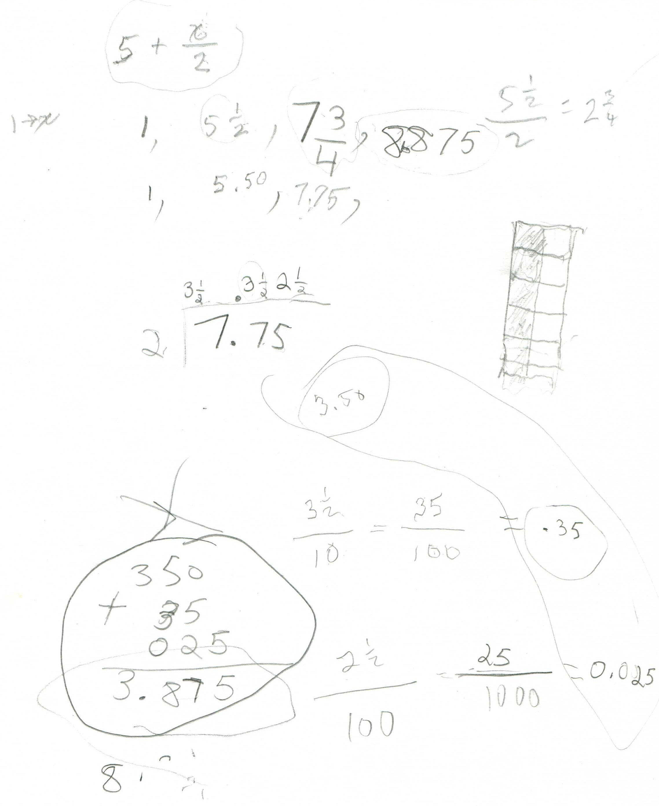

While iterating a function, Laura, a 4th grader, divides 7.75 by 2- WOW!
Don started Laura with the function 5 + x/2. Laura picked 1 to put in for x. She got 5 + 1/2 = 5 1/2 and 5.50 as the decimal. So they started 2 sequences, one written as fractions, one written as decimals:
1, 5 1/2,
1, 5.50,
(Iteration (or feedback) means to put in a number for x, do the arithmetic and get an output number; then one takes this new output number and uses it as the new input number, getting an infinite sequence).
So Laura put 5 1/2 in for x, divided by 2, then added 5. She got 7 3/4 and 7.75 as the output number. She then used 7.75 as the new input number. Don left Laura to her work as she divided 7.75 by 2. When he came back-what a pleasant surprise he had!

Laura got 3 1/2 and 3 1/2 /10 and 2 1/2/100, WOW! Laura did most of the work to write these as decimals, then she added up 3.5 + .35 + .025 = 3.875. She then added this to 5 to get 8.875 the new output number. Time ran out as they discussed the fraction name for 8.875. Tune in next time to see what this sequence approaches- what do you think?
Why was Don excited about this? Because Don had dreamed that Laura's method of division was possible, but he had never seen a student in 55 years do the whole thing as Laura did! Don had her change the answer to the "normal" form, so that if Laura showed this to her teacher the teacher would understand it. Don finds that in school math, the student is often marked wrong if the answer doesn't look like that in the answer book or isn't done the way the teacher expects it. This is also a good case for students to use a calculator. Eventually Don will use Mathematica to do thousands of iterations and have Laura see what happens.
Fine job Laura!!